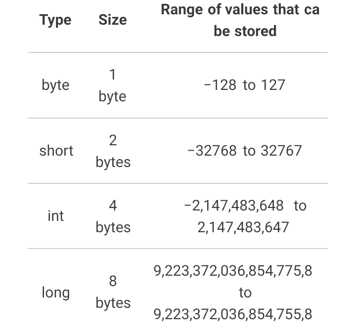

;">
;"> 
Hi dear, welcome to codewithjach java class, here am going to teach few things you need to know about java as a beginner. java as a programming langusge is a the third most popular language in the world which is used for so many purposes such as; android development etc. In this course , we going to discuss the:
Java is a high-level, class-based object oriented programming language that is designed to have as few implementation dependecies as possible, the syntax of java is similar to C and C++. But has fewer low level facilities than either of them .Now, we are going look into the history of java, java was originally developed by james gosling at sun micro systems in june 1991(which has since been a acquired by oracle) and released in 1995 as a core componrnt of sun micro system java platform.the idea was create a new language that would allow cosumer electronic devices to communicate with each other.also, developers use java to constructs applications in laptops, data centres, game consoles, scientific super computers, cell phones, and other devices and the salary of a java developer is about $75,000 so getting to know and use java is not a bad idea.
;">
In order to run java on your pc, you need this two things; a compiler known as java development kit(JDK for short) and a code editor, we have many code editors like; eclipse, netbean and intellij. You can dowlound any one of your choice but i will advice you to go for intellij(free community edition) , you will be needing jdk SE( standard edition) so just heard to goegle chrome and get intellij idea or any code editor of your choice and a JDK latest edition. After the dowload, the installation is easy so don't worry .Now the installation is done, for you to write your code, you will create a new project, after this click on source code at the left side and also click on new to create a package or class, we will still discuss what packages and classes are. am now going to talk about the Basics of java
NOTE: make sure to download the ones meant for your opareting system (mac, linux,windows 64-bit processor) and also edit them on environment variable account to create thier paths before installation.
To write a code in java, we have what is call function, a function is the smallest building block of a java program. It can also be referred as a group of code that performs a task, for example; a function that can send messages or search for information, we can name our function by specifing our returntype(like String, int etc) if it will return any value, if not then type void which is a reserved keyword for a returntype that won't return any value. after this, you can give your fuction a name such as; sendMessages or searchEngine(any name) but usually, the first function of our java programm is "main" which is followed by a pair of brackects like this"()" where we pass value and parameters to our funtion and we now add after the bracket, a pair of two brace"{}"", this is where our code (inbetween the braces) will be written. every function is to belong to a class, remember we talked about class earlier, so a class is a kind of organiser thats contains related functions. For example, just think of a freezer containing different kind of edible stuffs like drinks, solid food, fruits or sacks, now the freezer is the class while the edible stuffs are the funtions which will be now called method( a methed is a function contained in a class). To write a class, first you need to type the keyword"class" which you can now give it a name of your choice, followed by a braces which will contain our method(funtion).let's look into what is called"access modifier"in java, this is what determines if our classes and methods can be accessed by other classes and methods, so our classes and methods must have an access modifier. There are two main access modifiers in java which are; public and private, they act as thier name implies:public to be accessable and private to be unaccessabie by other classes and methods, an access modifier should be written at the beginning of our class name and method name(before writing "class and class name and also before writing the returntype/void and main name of your method") followed by static(every methods should be static which is written after the access modifier).before moving on, we will talk about"packages": it's just what holds and organises our classes(that contain the method and our code).So this is just a start in writng a java program, we are now going to discuss the syntax of java. Don't worry if u didn't understand how to name classes and methods, here are few images below for you to understand more
NOTE: classes name are named using the PascalNamingConvention(the first latter of each word is in uppercase) while mathods name are named using camelNamingConvention(the first latter of each word is in upper case expect the first word)
//procedure for naming a class:
access modifier keyword ClassName
for example:
Public class Main {
}
//procedure for naming a method(returntype)
access modifier static returntype(like:string,int,double)
methodName(parameters {} value){
....
}
for example:
Public
static string/int main (string{}args){
}
//procedure for naming a method(nonreturntype)
access modifier static nonreturntype(void)
methodName(parameters {} value){
....
}
for example:
Public
static void main (string{}args){
....
}
//naming both our class and method the way it should be
access modifier keyword ClassName
{
access modifier static nonreturntype(void)
methodName(parameters {} value){
....
}
example for:
Public class Main {
Public
static void main (string{}args){
....
}
}
NOTE: the shortcut for creating a method is "psvm" and your class will be automatically created when you ype in a name by creating a new class in the src(source code). Also, the two forward slashes "//" are commenting(commentsor qoutes) in java which won't be executed by the compiler, this makes our code more readable
for class where:
accesss modifier = Public
keyword for naming class = class
ClassName = Main
{} = braces that contain our method
for method where:
access modifier = public
every method should be static = static
return/nonreturntype = void
methodName = main
()= brackets containing our parameter and arguments
parameter = string
argument = args
{} = braces
thats contains our code
..... = our code.
Hi dear, hope you are learning a lot from this class, if you have grabbed all we have talked about so far, i just want to let you know that you a making a progress, so continue with the good work, As you know, constant practice leads to perfection so don't forget to practice what you are learning from here,just take a break and try to name a class and metthod by yourself.
Before we discuss about the java syntax, we will first of all know how java works, now the two things java does to execute your code
are: compliation and execution. In the compilation process, intellij using the java compiler to ompile our code to
what is called "byte code", this java compiler comes with the JDk you downloaded(we can check this in the command prompt by typing "javac" )
.To understand this more, head to the project panel at
left side of your code editor(intellij) where you will see
In java, we have what is called "datatype", this is responsible for determining the type of value to be assign to our variable
,we are still going to talk about variables so don't bother. To explain datatype more, it's just like what specifies the type of data or value
to be assign to a variable, there are two types of datatypes in java which are
primitive
reference
primitive data types in java are the the predefined data types of java which specify the size and type of any standard values .Java has 8 primitive data types which are:
table for integer primitive data types

NOTE:integer data type is one which holds whole number values which consist
of "byte, short, int, and long". the size of the values that can be stored depends on the integer type
that was choose
while
floating point data types are used to represent numbers with a fractional part.
Also, the range of values is calculated as -(2^n-1) to (2^n-1), where n is the number of bits required
//procedure for coding primitive data types
datatype variable name(any reasonable name ) assignment operator(=) value
//(1)byte:
byte number = 12
//(2)int:
int number2 = 100
//this also applies to long and short
//(3)double:
double number3 = 10.34
// this also applies to float
//(4)boolean:
boolean condition = true
//(5)character:
char singleaphla = 'j'